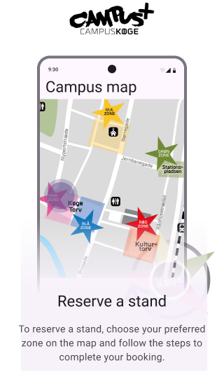

<!-- <section class="map-sec">

    <div id="screen1" class="screen active">
        <h1>Campus Map</h1>
        <button id="start-btn">Let's start</button>
    </div>

 
    <div id="screen2" class="screen">
        <h1>Campus Map</h1>
        <div class="map-container">
            <div class="zone red" id="red-zone"></div>
        </div>
    </div>


    <div id="screen3" class="screen screen-zoom">
        <h1>Campus map</h1>
        <div class="seats-grid"></div>
    </div>
</section> -->

<section class="map-sec">

    <h1>Campus Map</h1>
    <!-- Другий екран - Карта -->
    <div id="screen2" class="screen active">
        
        <div class="map-container">
            <div class="zone red" id="red-zone"></div>
        </div>
    </div>

    <!-- Третій екран - Червона зона (місця) -->
    <div id="screen3" class="screen screen-zoom">
        <div class="seats-grid"></div>
    </div>

    <!-- Модальне вікно -->
    <div id="modal" class="modal">
        <div class="modal-content">
            <span id="close-modal" class="close-btn">&times;</span>
            
            <button id="start-btn" class="go-btn">Let's start</button>
        </div>
    </div>
</section>